三、数据库控制技术
1.数据库安全性
1.1 数据库的安全性
·数据共享带来数据库的安全性问题
·数据库的安全性是指在数据库应用系统的不同层面（数据库系统层、操作系统层、网络层）提供安全防范措施，保护数据库不收恶意访问，完全杜绝几乎是不可能的
·TCSED/TDI安全级别划分ABCD四组7个等级：A1，B3，B2，B1，C2，C1，D
1.2 数据库系统采用的安全保护措施
访问控制技术（用户标识与鉴别）
存取控制技术
视图
数据加密
数据库审计
1.3 了解存取控制中用户在不同对象上有哪些权限
·存取控制：只允许用户进行权限范围内的数据存取操作，最有效的安全手段，包括定义用户权限和合法权限检查，分为自主存取控制（C2级）和强制存取控制（B1级）
各个数据对象所允许的操作：
| 数据对象 | 操作类型 |
|---|---|
| 模式 | CREATE SCHEMA，DROP |
| 基本表 | CREATE TABLE，ALTER TABLE，DROP |
| 视图 | CREATE VIEW，DROP |
| 索引 | CREATE INDEX，DROP |
| 表和视图的元组 | SELECT，INSERT，UPDATE，DELETE，REFERENCES，ALL PRIVILEGES |
| 属性列 | SELECT，INSERT，UPDATE，DELETE，REFERENCES，ALL PRIVILEGES |
1.4 SQL自主存取控制DAC
数据库角色：权限的集合
//创建一个角色
CREATE ROLE R1;
//授予角色R1拥有三个关系的查询权限
GRANT SELECT ON TABLE STUDENT, SC, COURSE TO R1;
//将角色R1授予用户Li和Zhao，使它们具有角色R1所包含的全部权限
GRANT R1 TO Li, Zhao;
1.5 SQL强制存取控制MAC
·分为主体和客体，主体包括DBMS所管理的实际用户和代表用户的各进程，客体包括文件、数据表、视图、记录、属性列等等
·主体的安全分类级别成为许可证级别，客体的安全分类级别成为密集
·控制规则：
- 仅当主题的许可证级别大于或等于客体的密集时，主体才能读取客体（上读）
- 仅当主题的许可证级别等于或小于客体的密集时，主体才能写客体（下写）
·一般用户或程序不能修改系统安全收取那状态，只有特定的系统权限管理员才可以这么做，提供了更高级别的安全性，但也有诸多不便
1.6 视图机制
·主要功能是提供数据独立性，同时也是一种重要的自主授权机制，安全保护功能并不精细
·视图可实现的安全保护： - 将用户限定在数据表中特定的数据行上 - 将用户限定在数据表中特定的数据列上 - 将多个表中的列连接起来，使他们看起来像一个数据表 - 提供聚合信息而非详细信息
·视图与授权机制配合 - 用视图屏蔽掉一部分保密数据，进一步定义存取权限 - 通过定义不同的视图及有选择地授予视图上的权限，可以将用户、组、角色限制在不同的数据子集内
1.7 什么是角色、角色对权限管理有何用处
数据库角色：权限的集合
·用户数量比较大的情况下，可以为一组组具有相同权限的用户创建一个角色，简化授权的过程
2.数据库完整性
2.1 定义，关系模型必须满足的完整性约束条件
·含义：正确性、有效性、相容性（表示同一事实的两个数据应相同）
·关系数据库对数据的各种限制是以完整性约束条件的形式在关系数据库模式中指定的
·关系数据库完整性约束条件分为： - 实体完整性约束 - 参照完整性约束 - 其他（用户定义的）完整性约束
·关系数据库中，完整性控制策略包括默认值、规则、约束（优先于触发器、规则和默认值）、触发器（编程的方法）和存储过程等
·数据完整性另一分类： - 声明式数据完整性（非编程方式）：约束、默认值、规则 - 过程式数据完整性（编程方式）：触发器、存储过程
2.2 理解静态约束和动态约束含义
2.3 完整性约束条件作用对象
- 关系（关系约束）：一个关系的各个元组之间、或者多个关系之间存在的各种联系或约束。常见的关系约束有：实体完整性约束、参照完整性约束、函数依赖约束、统计约束等
- 元组（元组约束）：元组中各个属性之间的约束关系
- 属性列（列级约束）：对数据类型、格式、值域、空值的约束
实体完整性
·规定：主键的值唯一，不能取空值
·用PRIMARY KEY定义，可以定义为列级约束条件或标记约束条件，对多个属性构成的主键只能定义为表级约束条件
CREATE TABLE SC (
Sno CHAR(10) NOT NULL,
Cno CHAR(4) NOT NULL,
Grade SMALLINT,
PRIMARY KEY (Sno, Cno) //只能在表级定义主键
);
·系统一般会在主键属性上自动创建唯一的索引来强制唯一性约束
参照完整性
·规定：不允许引用不存在的元组；外键字段的值要么为空值要么是被引用关系中元组的对应值
- FOREIGN KEY定义哪些列为外键，
- REFERENCES短语指明外键参照哪些表的主键
CREATE TABLE SC (
Sno CHAR(10) NOT NULL,
Cno CHAR(4) NOT NULL,
Grade SMALLINT,
PRIMARY KEY (Sno, Cno),
FOREIGN KEY (Sno) REFERENCES STUDENT(Sno),
FOREIGN KEY (Cno) REFERENCES COURSE(Cno)
);
·维护参照完整性的策略：
1.参照关系中，需要定义外键是否允许为空值
2.参照关系中，插入元组有受限插入和递归插入（级联CASCADE插入）两种
3.参照关系中，修改元组：先删除、再插入
4.被参照关系中，删除元组有级联删除CASCADES、受限删除RESTRICTED、置空值删除
5.被参照关系中，修改主键：先删除、再插入
·违反参照完整性，系统一般选用默认策略，即拒绝执行。如果想让系统采用其他策略，则必须在创建表时加以说明
2.4 用户定义的完整性约束条件
·是限定某一具体应用的数据必须满足的语义要求，由RDBMS提供定义和检验用户定义的完整性的机制
·用户定义的完整性的定义： - 属性上的约束条件的兴义：唯一（UNIQUE）、非空（NOT NULL）、CHECK约束、默认值DEFAULT等 - 元组上的约束条件的定义：用CHECK短语，元组级的限制可以设置不同属性之间的相互约束条件
//创建table1，指定c1字段不能包含重复值，c2字段只能取特定值
CREATE TABLE table1 (
c1 CHAR(2) UNIQUE,
c2 CHAR(2) CHECK (c2 IN ('00', '01', '02', '03')),
c3 INT DEFAULT 1
);
//定义CONSTRANT约束
CRAETE TABLE Student (
Sno NUMBERIC(6) CONSTRAINT C1 CHECK (Sno BETWEEN 100000 AND 999999),
Sname CHAR(20) CONSTRAINT C2 NOT NULL,
Sage NUMBERIC(3) CONSTRAINT C3 CHECK (Sage BETWEEN 18 AND 60),
Ssex CHAR(2) CONSTRAINT C4 CHECK (Ssex IN ('男', '女')),
CONSTRAINT PK_Student PRIMARY KEY (Sno)
);
//修改表中的完整性限制：先删除原来的约束条件，再加新的
//修改表Student中的约束条件，年龄改为小于40
ALTER TABLE Student DROP CONSTRAINT C3;
ALTER TABLE Student ADD CONSTRAINT C3 CHECK (Sage < 40);
2.5 通过触发器定义完整性约束条件
| 约束 | 触发器 |
|---|---|
| 声明式、静态的 | 过程式、动态的 |
| 只能实现简单动作如拒绝操作 | 可以实现复杂的完整性约束 |
| 由事件驱动的特殊过程，在对表或视图发出UPDATE、INSERT或DELETE时自动执行 | |
| 也叫事件-条件-动作规则 |
·示例
CREATE TRIGGER SC_T
AFTER UPDATE OF Grade ON SC
REFERENCING
OLD row AS OldTuple,
NEW row AS NewTuple
FOR EACH ROW
WHEN (NewTuple.Grade >= 1.1*OldTuple.Grade)
INSERT INTO
SC_U(Sno, Cno, OldGrade, NewGrade)
VALUES
(OldTuple.Sno, OldTuple.Cno, OldTuple.Grade, NewTuple.Grade);
1.触发器的创建者：表拥有者或创建表的用户才可以在表上创建触发器，一个表上可以创建多个触发器
2.表名：触发器的目标表，更新时触发器才被激活
3.触发事件：INSERT、UPDATE、DELETE，或三者组合
4.触发时间：BEFORE、AFTER、INSTEAD OF
5.触发器类型：按照触发动作的间隔分为 - 行级触发器FOR EACH ROW：对每一个修改的元组都会触发触发器 - 语句级触发器FOR EACH STATEMENT：只在SQL语句执行时触发
6.触发条件：由WHEN子句指定
7.触发动作体
8.引用 REFERENCING NEW | OLD ROW AS <变量>，行级触发器，在过程体中引用事件之后的新值和事件之前的旧值
REFERENCING NEW | OLD TABLE AS <变量>，语句级触发器，仅适用于AFTER触发器，在过程体中引用整个表的新值和旧值
·实例
//定义一个BEFORE行级触发器，为教师表Teacher定义完整性规则“教授的工资不得低于4000元，如果低于4000元，自动改为4000元”
CREATE TRIGGER Insert_Or_Update_Sal
BEFORE INSERT OR UPDATE ON Teacher
FOR EACH ROW
BEGIN
IF (new.Job = '教授') AND (new.Salary < 4000)
THEN new.Sal := 4000;//:=表示赋值
END IF;
END;
//将每次对表Student的插入操作所增加的学生个数记录到表StudentInsertLog中
CREATE TRIGGER Student_Count(
AFTER INSERT ON Student
REFERENCING NEW TABLE AS Delta
FOR EACH STATEMENT
INSERT INTO StudentInsertLog(Numbers)
SELECT COUNT(*) FROM Delta;
)
//删除触发器
DROP TRIGGER Student_Count ON Student;
2.6 违约处理具体措施
·触发器执行顺序： - 1.执行该表上的BEFORE触发器 - 2.激活触发器的SQL语句（触发事件） - 3.执行该表上的AFTER触发器
·如果激活触发器的SQL语句违反了约束条件，则不会执行AFTER触发器
2.7 SQL Server中完整性的实现
·使用约束CONSTRANT优先于使用触发器、规则和默认值：
·CHECK约束中不能包含子查询：
ALTER TABLE Employees
ADD CONSTRAINT CK_birthdate
CHECK (BirthDate > '01-01-1900' AND BirthDate < getdate());
ALTER TABLE Employees
ADD CONSTRAINT FK_Orders_Customers
FOREIGN KEY (CustomerID)
REFERENCES Customers(CustomerID)
ALTER TABLE Employees
ADD CONSTRAINT DF_contactname
DEFAULT 'unknown'
FOR ContactName;
ALTER TABLE Employees
ADD CONSTRAINT U_CompanyName
UNIQUE (CompanyName);
·UNIQUE约束 - 使用唯一性约束的字段允许为空值 - 唯一性约束用于强制在指定字段上创建一个唯一性索引
SQL Server的触发器
·与之前学的触发器格式稍有不同
· 临时虚拟表 : - INSERTED表：保存INSERT操作中新插入的数据或UPDATE操作中更新后的数据 - DELETED表：保存DELETE操作中删除的数据或UPDATE操作更新前的数据 - 触发器操作完后相关临时表自动删除
//创建删除触发器，当删除一本书时，先检查这本书是否已经被卖过了，即是否和订单关联，如果已经有关联则概述的信息并不能被删除，删除动作需要回滚。
CREATE TRIGGER Products_Delete
ON Products FOR DELETE
AS
IF(SELECT COUNT(*)
FROM [Order Details] INNER JOIN deleted
ON [Order Details].ProductID = deleted.ProductID) > 0
BEGIN
RAISERROR('该书已经被卖出，不能删除', 10, 1)
ROLLBACK TRANSACTION
END
//创建限制更新数据的触发器，限制将SC表中不及格学生的成绩改为及格
CREATE TRIGGER tri_grade
ON SC FOR UPDATE
AS
IF UPDATE (Grade)
IF EXISTS (SELECT * FROM INSERTED JOIN DELETED ON
INSERTED.Sno = DELETED.Sno WHERE INSERTED.Grade >= 60 AND DELETED.Grade < 60)
BEGIN
RAISERROR('不及格学生的成绩不能修改')
ROLLBACK
END
3.数据库恢复技术
3.1 事务的基本概念，如何定义，性质
事务：用户定义的一个数据库操作序列，不可分割的工作单位，要么全做，要么全不做。在关系数据库中，一个事务可以是一条SQL语句，一组SQL语句或整个程序
·定义事务
BEGIN TRANSACTION
//事务内的SQL语句
//……
COMMIT | ROLLBACK
- COMMIT表示提交，事务中所有操作结果被保存
- ROLLBACK表示回滚，事务中所有已完成的操作都被撤销，数据库回到事务开始前的状态
//例：银行转账事务的定义
BEGIN TRANSACTION
read(A);
A:=A-1000;
wirte(A);
if(A<0) ROLLBACK;
else{
read(B);
B:=B+1000;
write(B);
COMMIT;
}
·事务的性质： ACID特性 ，即 - 原子性：事务不可分割，要么全部完成，要么全部不完成 - 一致性：事务必须使数据库从一个一致性状态变到另一个一致性状态。一致性状态：数据库中只包含成功执行的事务所提交的结果 - 隔离性：一个事务的执行不能影响另一个事务，保证并发执行结果正确 - 持久性：一个事务一旦提交，它对数据库的改变就应该永久保存下来
3.2 数据恢复的基本原理：数据冗余
·原理：利用存储在系统其他地方的冗余数据来重建数据库中已被破坏或不正确的那部分数据
3.3 建立冗余数据最常用的技术
·数据转储和登记日志文件。通常一起使用
3.4 了解数据转储的基本方法
·DBA定期地将整个数据库复制到磁带或领一个磁盘上保存，后背副本，只能将数据库恢复到转储时的状态
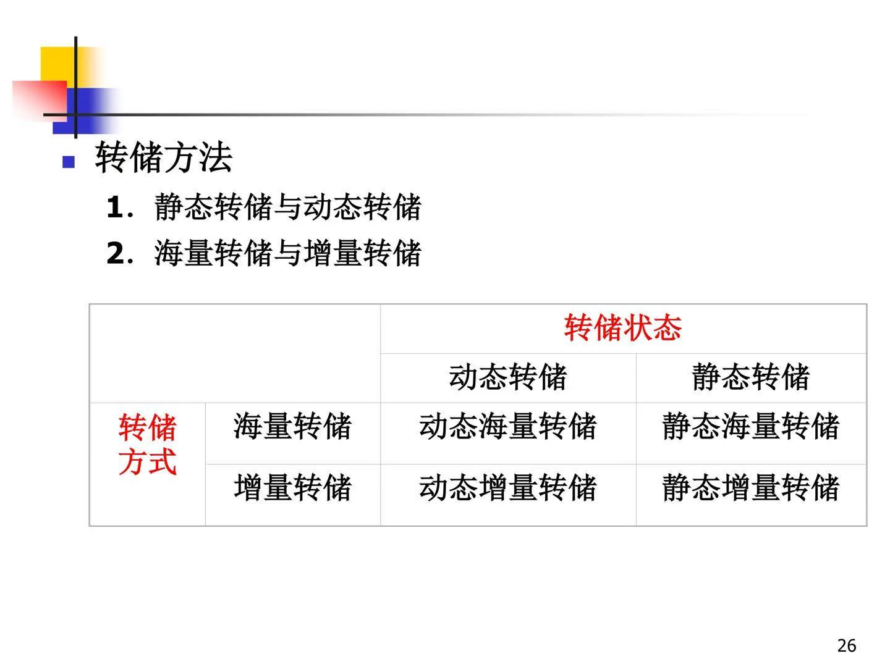
-
静态存储：在系统中无运行事务时进行存储，但过程中不允许存取、修改数据库
-
动态存储：与用户事务并发进行，期间允许存取、修改数据库，但不能保证副本数据正确有效，需要配合日志恢复
-
海量存储：每次转储全部数据库
-
增量存储：只转储自上次转储后更新过的数据
3.5 日志的内容，记日志的规则
·内容：事务标识、操作类型、操作对象、更新前后的数据值
·登记日志文件时必须遵循两条原则： - 登记的次序严格按并行事务执行的时间次序； - 必须先写日志文件，厚些数据库
3.6 故障的种类，对不同故障的恢复策略
事务故障
·事务在运行至正常终止点前被终止
·恢复方法：利用日志文件撤销事务对数据的更改，系统回滚到事务执行前的状态。
·事务故障的恢复由系统自动完成
系统故障
·一些未完成事务对数据库的更新已写入数据库/一些已提交事务对数据库的更新还留在缓冲区没来得及写入数据库，造成数据库不一致状态
·恢复方法：正向扫描日志建立Redo和Undo队列，Undo未完成的事务，Redo已完成的事务
·由系统在重新启动时 自动完成，不需要用户干预
介质故障
·介质上存储的数据受到破坏
·恢复方法：重装数据库，使数据库恢复到某个一致性状态，重做已完成的事务
·单用日志不能恢复，需要后背副本；需要DBA介入，具体恢复操作仍由DBMS完成
3.7 检查点恢复技术
·背景：为了提高回复效率，允许恢复子系统在登记日志期间动态维护日志，为此在日志文件中增加检查点记录、增加重启动文件（重新开始文件）
·检查点：记录在日志中、表示数据库是否正常运行的一个标志，记录所有当前活动事务的相关信息
·检查点记录的内容： - 建立检查点时所有正在执行的事务清单 - 这些事务在日志中最近一个记录的地址
·重启动文件：记录各个“检查点记录”在日志文件中的地址
·写检查点的步骤： - 1.把日志缓冲区的内容写入日志文件 - 2.在日志文件中写入一个检查点记录 - 3.把数据库缓冲区的内容写入数据库 - 4.把检查点记录在日志文件的地址写入重启动文件
·遵循“日志记录优先写入”原则，写检查点过程中不允许事务执行任何更新操作
·利用检查点的恢复步骤： 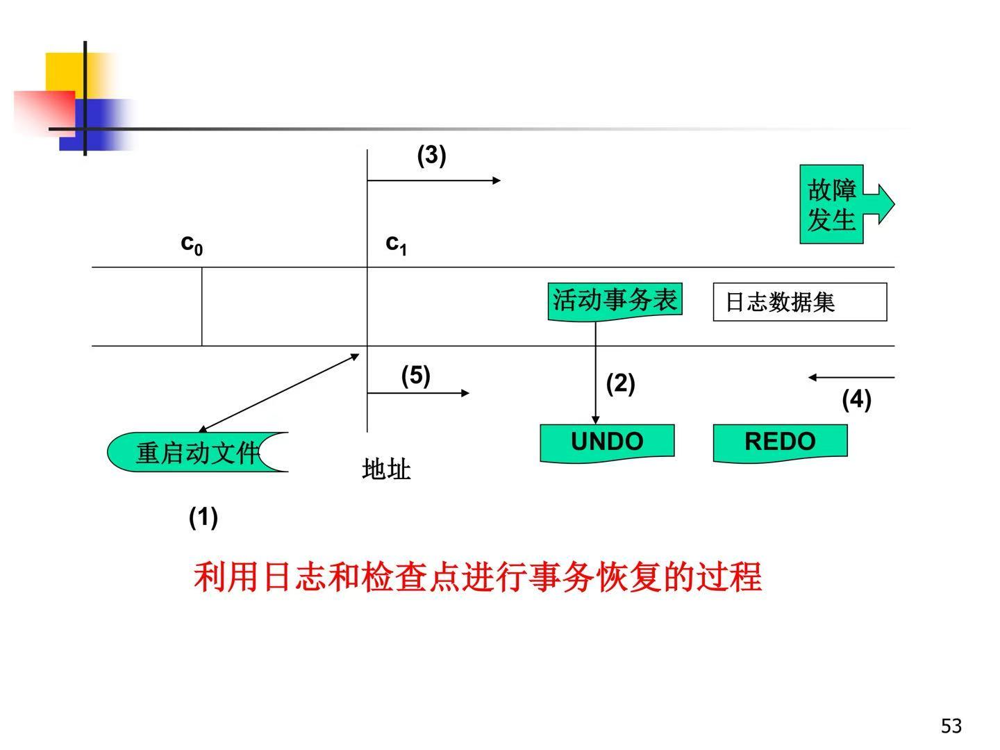
3.8 数据库镜像恢复技术
·数据库镜像：DBMS自动把整个数据库或其中的关键数据复制到另一个磁盘上，自动保证镜像数据与主数据的一致性
·出现介质故障时，可由镜像磁盘继续提供服务，同时DBMS自动利用镜像磁盘数据进行数据库的恢复，不需要关闭系统和重装数据库副本
4 并发控制
4.1 丢失更新、不可重复读、读“脏”数据
| 丢失更新 | 不可重复读 | 读“脏”数据 |
|---|---|---|
| 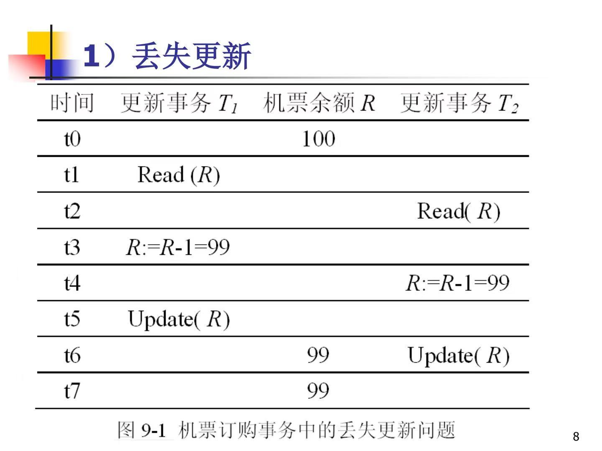 | 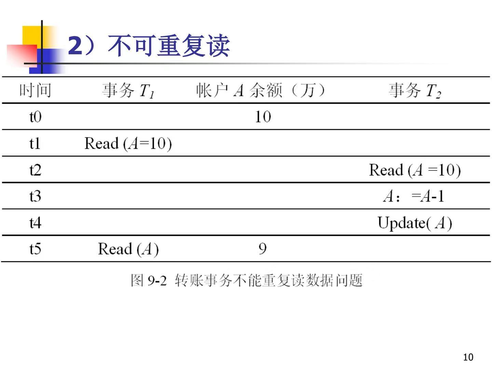 | 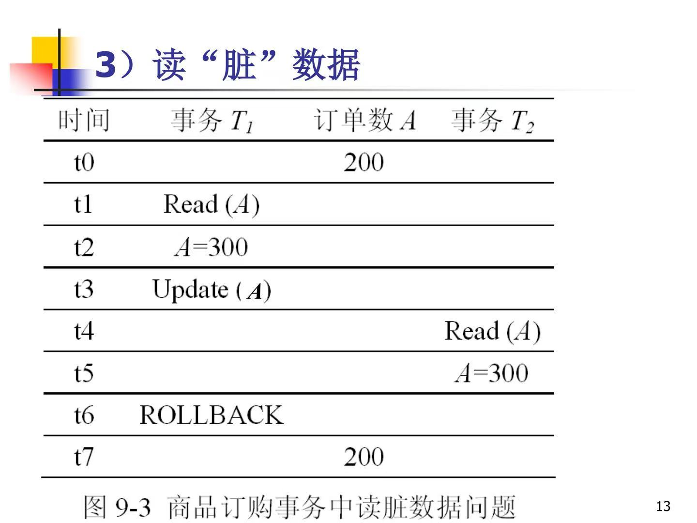 |
| 事务2的提交结果破坏了事务1提交的结果 | 事务1的两次读取结果不一致 | 事务1读取到事务2未提交的中间结果 |
4.2 封锁类型：S锁和X锁
共享锁（S锁） - 若事务T对数据对象A加上S锁，则其他事物只能再对A加S锁，而不能加X锁，直到T释放A上的S锁 - 保证其他事务可以读A，但在T释放A上的S锁之前不能对A做任何修改
排它锁（X锁） - 若事务T对数据对象A加上X锁，则只允许T读取和修改A，其他任何事务都不能再对A加任何类型的锁，直到T释放A上的锁
4.3 三级封锁协议
一级封锁协议
·事务T在修改数据A前必须对其加X锁，直到事务结束才释放。
·做到了：没有修饰更新
·没做到：不能保证可重复读和不读脏数据
二级封锁协议
·在一级封锁协议的基础上，规定：事务T在读数据A之前必须先对其加S锁，读完后即可释放S锁
·做到了：防止读脏数据
没做到：不能避免不可重复读
三级封锁协议
·在二级封锁协议的基础上，规定：某一事务施加的S锁要保持到该事物结束才释放
·做到了：可重复读
·没做到：效率不高
4.4 可串行化调度
·不同的事务调度可能会产生不同的结果，多个事务交叉执行（并发）结果与某个穿行执行结果相同，则正确，该调度称为可串行化调度。可串行化石并发事务正确调度的准则
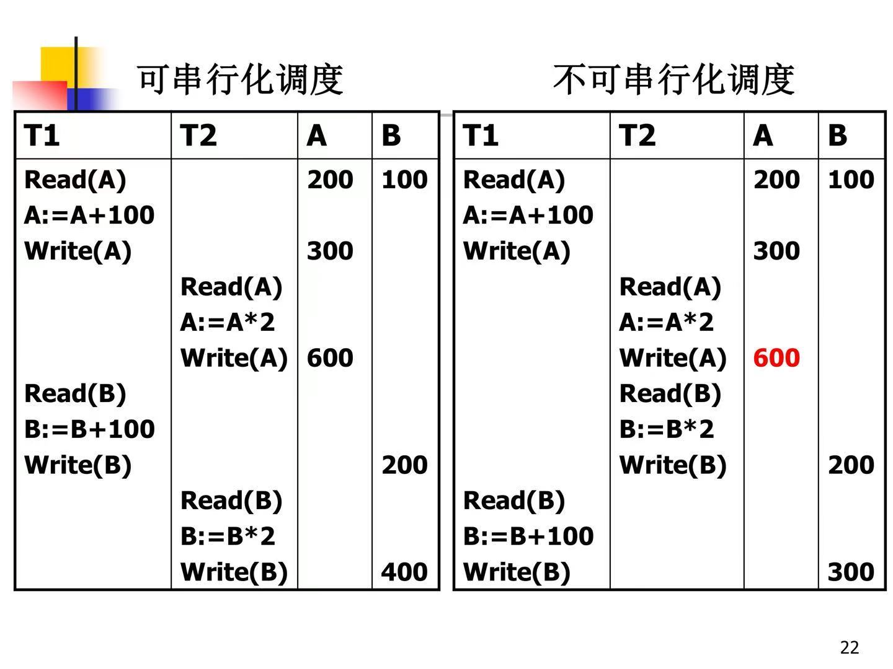
·当前仅当优先图中没有回路时，调度S才是可串行化的
4.5 两段封锁协议
活锁与死锁
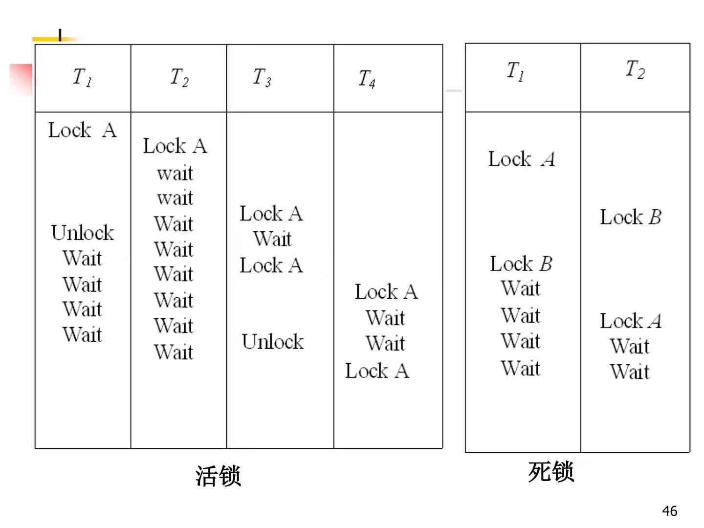
| 活锁 | 死锁 |
|---|---|
| 某个事务总也得不到锁而长期处于等待状态 | 各自部分封锁+互相等待 |
·预防思索：一次封锁法、顺序封锁法、事务重试法
一次封锁法：
-
每个事务在开始执行之前获得所有数据项上的锁
-
不存在持锁等待，不会发生死锁
-
问题：降低了系统的并发度，很难事先精确地确定每个事务要封锁的对象
两阶段封锁协议 - 任何事务在对数据进行操作前必须先获得锁 - 一个事务所有的封锁操作都在第一个解锁操作之前
·事物的执行分为两个阶段 - 第一阶段：获得锁阶段，也称为扩张阶段，事务可以申请获得任何数据上任何类型的锁，也可以进行锁的升级转换，但不能释放任何锁 - 第二阶段：释放锁阶段，也称为收缩阶段，事务可以释放任何数据项上的任何类型的锁，也可以进行锁的降级转换，但是不能再申请任何锁。
| 图示 | 举例 | 死锁情况 |
|---|---|---|
| 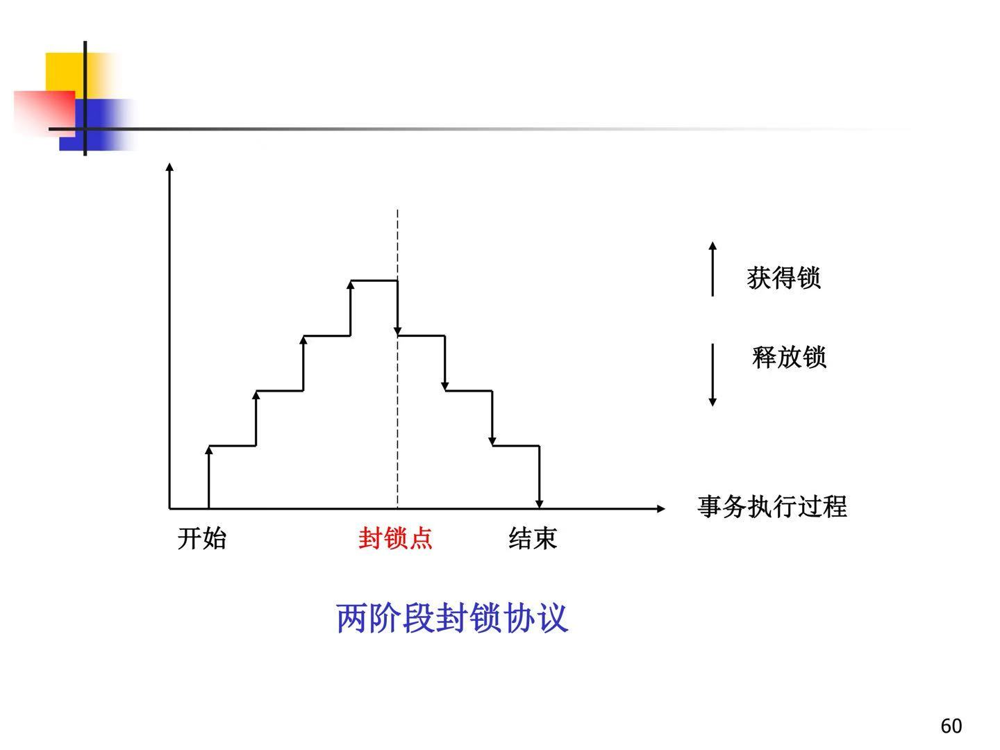 | 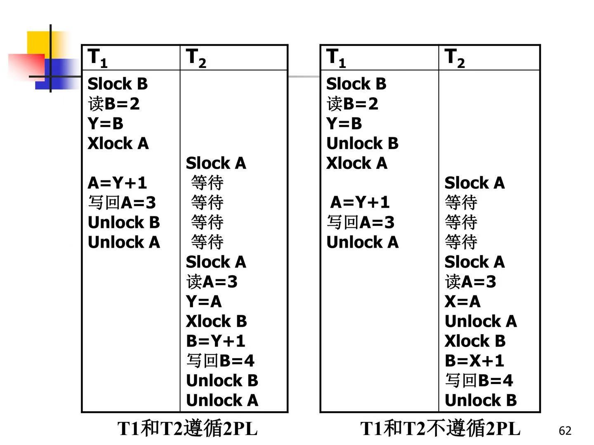 | 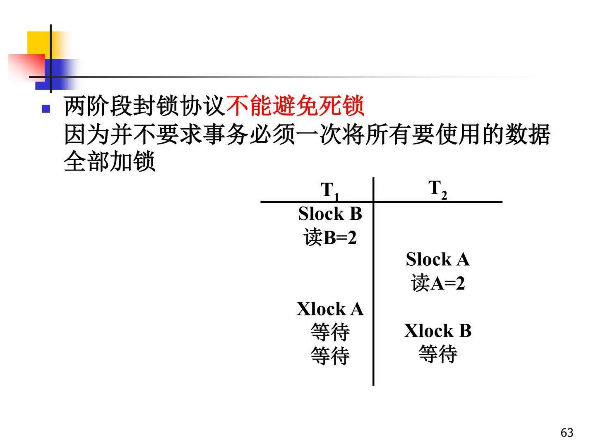 |
| 所遵守两阶段封锁协议的事务，其并行执行的结果也一定是正确的，是可串行化调度的充分条件 | 不能避免死锁，因为并不要求事务必须一次将所有要用的数据全部加锁 |
·为了避免死锁，采用一次封锁法，将2PL改成保守的2PL：事务在操作执行前获得所有操作数据上的锁，一次性封锁所有数据项，否则等待。不会产生死锁，但难以实现，因为修要预先知道事务所需要处理的数据。
4.6 封锁粒度
封锁粒度：封锁对象的大小 - 逻辑单元：属性列、元组、关系（表）、索引项、整个索引、整个数据库等 - 物理单元：页（数据页或索引页）、物理记录、数据库存储空间等
·封锁粒度越小，并发度越高，需要的锁越多，系统开销越大
·封锁粒度越大，并发度越低，需要的锁越少，系统开销越小
多粒度树：以树形结构来表示多级封锁粒度，根节点是整个数据库表示最大的数据粒度
多粒度封锁协议： - 允许多粒度树中的每个结点被独立地枷锁 - 对一个结点加锁意味着这个结点的所有后裔节点也被加以同样类型的锁 - 两种封锁方式（效果一样）：显示封锁是直接加到数据对象上的封锁，隐式封锁是由于其上级结点加锁而使该数据对象加上了锁
4.7 多粒度封锁需要解决的问题，意向锁
·既要检查显示封锁，还要检查隐式封锁，检查的内容多、效率低
意向锁 - 对任一结点加基本所，必须先对他的上层结点加意向锁； - 如果对一个结点加意向锁，则说明该结点的某个下层结点正在被加锁
意向共享锁IS锁：如果对一个数据加IS锁，表示它的后裔节点拟（意向）加S锁
意向排它锁IX锁：如果对一个数据加IX锁，表示它的后裔节点拟（意向）加X锁
共享意向排它锁SIX锁：如果对一个数据加SIX锁，表示对它加S锁，再加IX锁，即SIX=S+IX（该事务要读整个表，同时会更新个别元组）
| 相容性和封锁强度 | 封锁方法 |
|---|---|
| 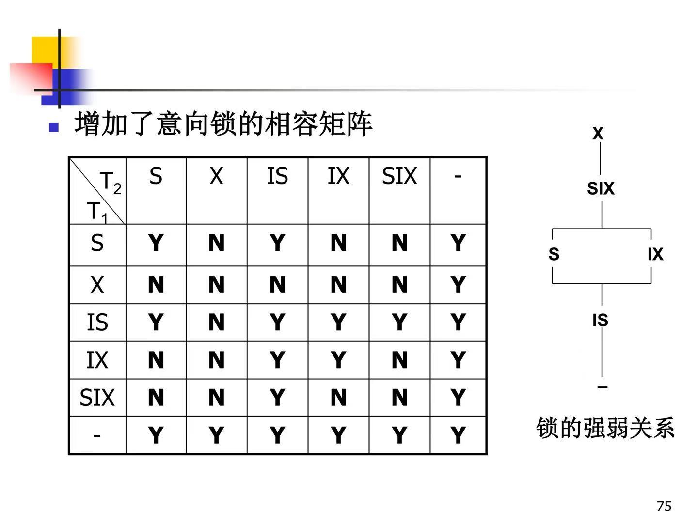 | 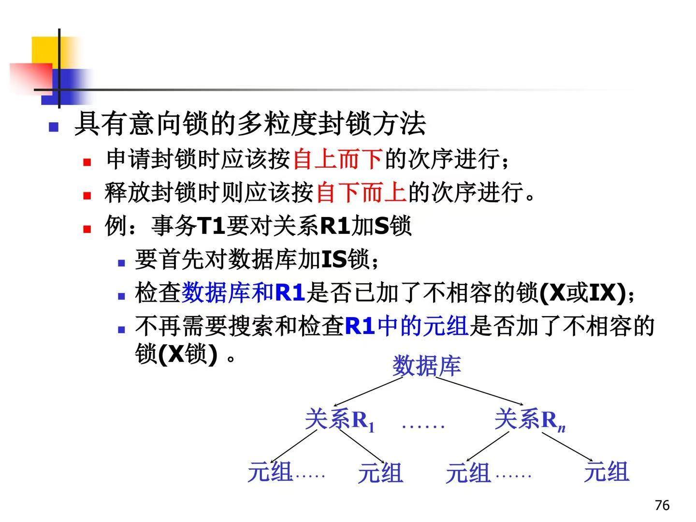 |